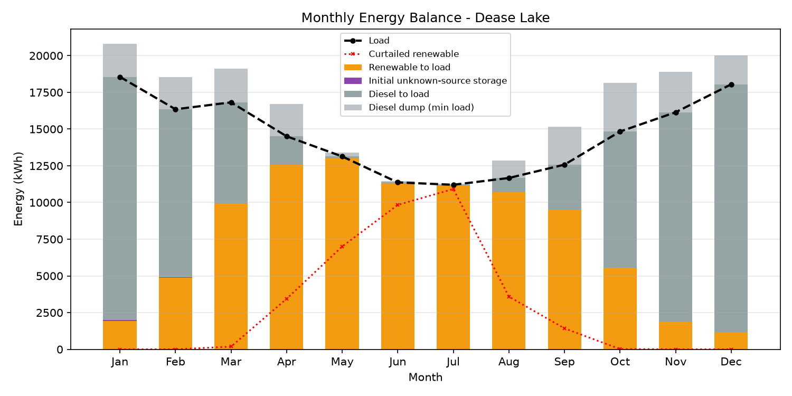

Simulation-only scenario summary
Weather year: 2018. Synthetic load: 175200 kWh/year; realized peak 43.44 kW. No matched measured-site validation.
53.4%
Renewable Delivered to Load
28739 L
Annual Diesel
$1352328
Net Present Cost
0.000%
Unmet Load
Simulation Design (not validated for deployment)
| Component | Capacity |
|---|---|
| Photovoltaic | 150.0 kW |
| Wind turbine | 0.0 kW |
| Battery power | 125.0 kW |
| Battery energy | 250.0 kWh |
| Diesel backup | 47.78 kW |
Baseline Comparison
| Method | NPC (CAD) | Diesel (L/yr) | Renewable % | Unmet % |
|---|---|---|---|---|
| Diesel Only | $1656481 | 57483 | 0.0 | 0.000 |
| Rule Of Thumb | $1957545 | 23461 | 60.2 | 0.000 |
| Fixed Renewable | $1363769 | 32648 | 48.0 | 0.000 |
| Optimized | $1352328 | 28739 | 53.4 | 0.000 |
Monthly Energy Balance

Multi-Year Uncertainty
| Metric | Estimate | 95% CI Lower | 95% CI Upper |
|---|---|---|---|
| annual_diesel_litres | 28974.15 | 28743.29 | 29340.35 |
| renewable_fraction_pct | 53.24 | 52.73 | 53.55 |
| npc_cad | 1358653.38 | 1352456.02 | 1368484.13 |
Storage boundary energy
Unknown-source initial SOC 137.50 kWh; terminal 37.50 kWh; initial unknown energy delivered 97.72 kWh. Conversion losses 11250.80 kWh.
Fixed-design sensitivity
Stipulated one-at-a-time stresses, no re-optimization: fuel +/-25%, CAPEX +25%, battery replacement year 12/diesel year 15, snow cap 20%, and ideal efficiency without temperature penalty or heating energy. Baseline is stressed consistently.
| Stress | NPC CAD | Savings % |
|---|---|---|
| base | 1352328 | 18.36 |
| fuel_low | 1159456 | 8.75 |
| fuel_high | 1545200 | 24.34 |
| capex_high | 1478759 | 11.24 |
| replacements | 1436612 | 14.10 |
| snow_high | 1354375 | 18.24 |
| battery_no_temp_penalty | 1308721 | 20.99 |
Limitations
- Simulation-only: grid-optimal within the searched capacities, fixed dispatch and fixed diesel sizing; no field calibration or external validation.
- PV uses a fixed GHI tilt factor and ambient rather than cell temperature; azimuth is ignored. 10 m wind is used without adjustment to the configured 30 m hub height.
- Snow loss is uncalibrated and capped at 5% in the default scenario. Battery efficiency uses ambient temperature without heating loads, thermal dynamics, cold charging restrictions or capacity degradation.
- Economics repeat one year's fuel and O&M for 25 discounted years; replacement, fuel escalation, salvage and component degradation are omitted. All cost, load and coefficient values are stipulated scenario assumptions, not extracted quotes.
- Bootstrap intervals estimate the five-year mean of fixed-design annual outcomes (1000 resamples, seed 42), not a future-year prediction interval or lifecycle-cost uncertainty. The optimization year is reused; consecutive-year independence and interval coverage are unchecked. Cost/load/model uncertainty and climate trends are excluded.
- Diesel is sized at 110% of realized peak with unlimited fuel and no outages. Low unmet load is not redundancy, electrical stability, black-start or contingency evidence.
- The 80%-of-optimized baseline depends on the proposed design; it is not an independently selected competitor. Loads are synthetic, with fixed UTC offsets and no DST.
- Each year starts at midpoint SOC of unknown source and ends unconstrained. Stored sources are proportionally mixed. Initial energy is not credited as renewable; initial/terminal SOC and unknown-source delivery are quantified below. No warm-up or cyclic-year condition is imposed.
- NASA POWER resolution is 0.5 x 0.625 degrees for meteorology and 1 x 1 degree for solar; site microclimate and long-term climate changes are not modelled.
Input hashes, dependencies and source revision: run metadata. Licence scope: CC BY 4.0 outputs and NASA POWER weather.